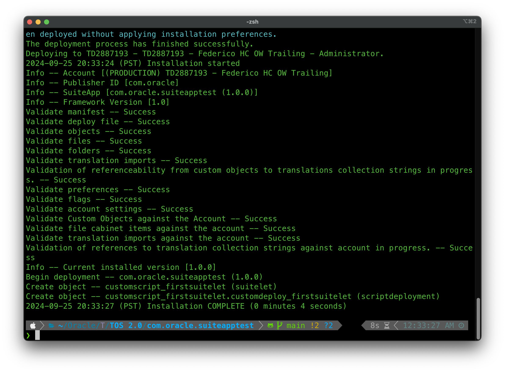
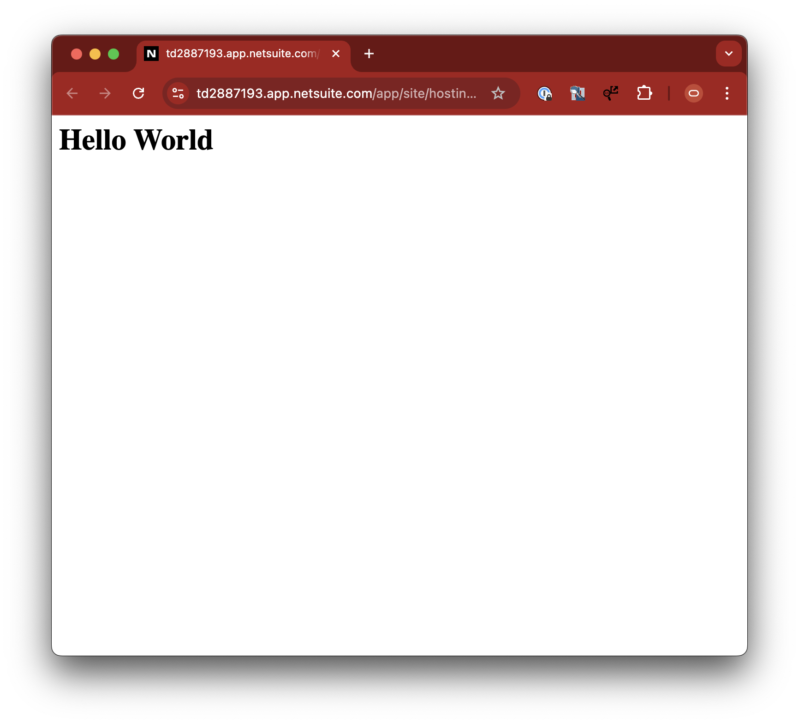

Deploying your SuiteLet
Everything you've done until now is local, and your SuiteLet needs the NetSuite context to run so we have to deploy it to a NetSuite account, you're going to use your Test Drive account we configured earlier. For that we need to link it to the SuiteCloud SDK.
On your command line, run the command
You will have to enter an authentication ID, that's used to recognize the authentication later, you could have many accounts for development purposes.
The process will continue on the browser by authenticating with NetSuite. You will need to choose a role that has the Oauth 2.0 permissions, if you're an administrator in the account it should work.
If you're not an administrator in the account, you can request one to give you the appropriate permissions.
Once you're authenticated, you can push your SuiteApp to the Test Drive account by running the command
That command will validate the code and deploy it into the account. Because our SuiteApp is very simple, the validation will not return any issues, you might need to add dependencies to your SuiteApp by running the code
That will edit the manifest.xml file to add the required dependencies for your code.
Once the SuiteApp is deployed into your Test Drive account you can verify it's there by going to
Having the SuiteApp installed means that the objects were cretead in the account but the script is not deployed yet. In order to create a deployment for your script, go to
There, choose "firstSuiteLet.js" as the script and click on Create Script Record, then fill out the form
When creating NetSuite objects, you'll be asked for an ID. NetSuite adds the object type in front of the ID (for example, scripts' IDs would start with "custscript"). It's a good practice to start your IDs with a low dash ( _ ) so that the ID you enter gets separated from the type added automatically by NetSuite.
Make sure to navigate to the Deployments subtad and add deployment information for the script.
Once the script is deployed, you'll need to add the deployment information to your SuiteApp. This process we just went through of creating the script record and deploying it can de done as onboarding steps for whoever is installing your SuiteApp, but it can be also done automatically by importing the SuiteApp deployment record to the project. That way, when the SuiteApp is deployed, the script gets deployed automatically as well.
To do that, go back to the terminal on your project and type in the command
Because you added the -i flag to the command, SuiteCloud will ask you for information regarding which object to import. Choose not to filter for type or SuiteApp and on the object types list, choose Script - Suitelet.
Once done, you'll see that there is a new file in the Objects folder of your project. It's the script record with the deployment information.
Objects in NetSuite are represented by xml files. If you knew the structure of the files you could create objects and deploy them directly into NetSuite. It's usually easier to let NetSuite create the object by specifying it in the UI and then importing it to the project.
After you have the script record on your project, you could try to deploy your SuiteApp again by running
Deployment fails now. What happened was that the SuiteApp now has an object that's already present in the account, and because that object didn't come from the SuiteApp (you created it a minute ago in the UI), it represents a conflict and the deployment can't continue. To solve this you'll need to perform an unexpected step:
Delete the script record from the account.
Don't worry, you won't lose any configurations because the object is already imported into your project. Go ahead, go back to the script record you have open on your NetSuite instance, click on Edit and then Actions -> Delete. Now, try deploying your SuiteApp again.
Success!
Now go to your NetSuite instance and navigate to
And try to find your script firstSuitelet
Open the record and navigate to the Deployments subtab and click on the deployment you configured earlier.
There, you'll see the SuiteLet URL, clicking it will open it and you'll be able to see it in all its glory.
One last thing, go back to the script record and navigate to the Execution Logs subtab, there you'll see the log we added to the script that specifies the entity of the Sales Order we loaded.
Congratulations! You just created and deployed your first SuiteApp. The deployment process to your customers will do the exact same to their accounts, except that they'll access your SuiteApp via the marketplace and it won't be directly deployed.